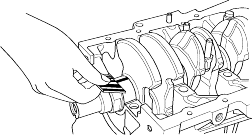

- To check main bearing-to-journal oil clearance, remove the main caps and bearing halves.
- Clean each main journal and bearing half with a clean shop towel.
- Place one strip of plastigauge across each main journal.
NOTE: If the engine is still in the car when you bolt the main cap down to check the clearance, the weight of the crankshaft and drive plate will flatten the plastigauge further than just the torque on the cap bolt and give you an incorrect reading. For an accurate reading, support the crank with a jack under the counterweights, and check only one bearing at a time. - Reinstall the bearings and caps, then torque the bolts to 51 Nm (5.2 kgf/m, 38 lbf/ft). Do not rotate the crankshaft.
- Remove the cap and bearing half, and measure the widest part of the plastigauge.
Main Bearing-to-Journal Oil Clearance:
Standard (New):
No. 1, 5:0.018 - 0.036 mm
(0.0007 - 0.0014 in.)
No. 2, 3, 4:0.024 - 0.042 mm
(0.0009 - 0.0017 in.)
Service Limit:0.05 mm (0.002 in.)

- If the plastigauge measures too wide or too narrow, (remove the engine if it is still in the car), remove the crankshaft and remove the upper half of the bearing. Install a new, complete bearing with the same colour code and recheck the clearance. Do not file, shim, or scrape the bearings or the caps to adjust clearance.
- If the plastigauge shows the clearance is still incorrect, try the next larger or smaller bearing (the colour listed above or below that one) and check again. If the proper clearance cannot be obtained by using the appropriate larger or smaller bearings, replace the crankshaft and start over.